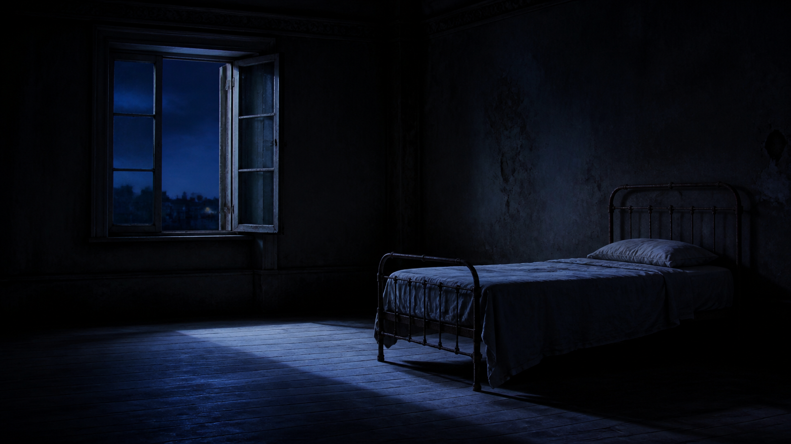

Filmmaker
& multidisciplinary artist
Mona
Moradi
Selected moving-image work
and visual projects
Behind the work
Mona works across filmmaking, writing, performance, and visual projects—using moving image to build atmosphere before explanation.
Bio and project credits to be added.
Selected work
Selected work[3]
Contact
For projects
and conversations.
Contact details to be added.
© Mona Moradi